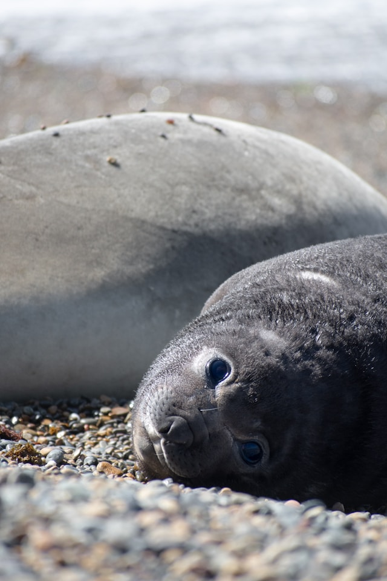
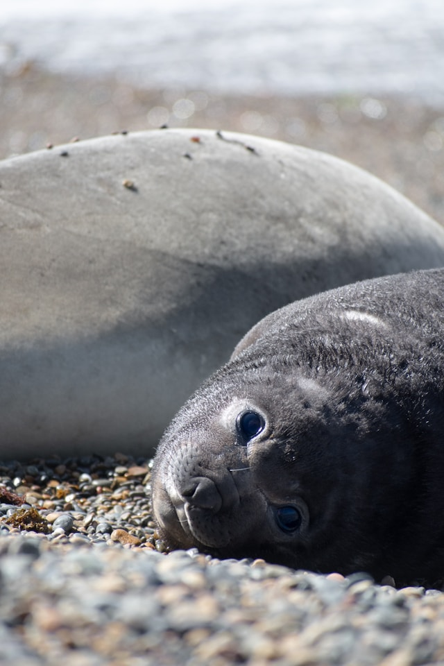

- There are over 30 seal species!
- The smallest is the Baikal seal, which can grow up to 1.4 meters long
- The largest is the elephant seal, which can grow up to 6.5 meters long
- Most seals can stay underwater for up to 30 minutes
- Elephant seals can hold their breath for up to 2 hours!
- The deepest recorded dive by a southern elephant seal was 2388 meters!
- Seal milk is 50% fat, and seal pups can gain 3-5 pounds a day on milk alone!
- Seals have whiskers like a cat, which they use to feel vibrations from other animals
- Fossil records indicate that seals could be as old as 30 million years!
- Seals are classified as pinnipeds, along with walruses and sea lions
- "Galumphing" is the term for how seals move on land
- Unlike other species, ribbon seals move by alternating their front flippers -- slithering like a snake!
- The closest living relative to seals are musteloids: skunks, weasels, red pandas, and raccoons!

About
Welcome to Awesome Seal Facts! The website where you can find
awesome facts about seals and look at adorable seal photos! Scroll
down to learn more about these wonderful marine mammals.
Welcome to Awesome Seal Facts! The website where you can find
awesome facts about seals and look at adorable seal photos! Scroll
down to learn more about these wonderful marine mammals.
 
